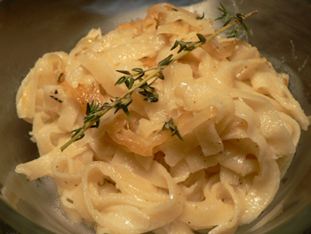

Heart disease redux, and vermouth pasta
I have spent the last year eagerly anticipating my annual cholesterol test. Some Eat veterans might remember my shocking news from last summer, when I learned that my bad cholesterol was above normal, and that I was at risk for heart disease later in life. I got some good comments on that post, and endless advice from friends and colleagues since then. Most people agreed that it was a bad reading, since I wasn’t warned not to eat breakfast before the test and I ate a whole bagel with cream cheese (and salami!) just before going in. Nevertheless, I made changes to my diet over the last year: I cut out most charcuterie. I stopped having a bowl of ice cream every night. I stopped keeping crème fraîche on hand. I cut my breakfast down to a half bagel from a whole bagel, and I started using peanut butter instead of cream cheese some of the time. I also exercised a bit last summer, running and swimming every week.
All of this resulted in a five-pound weight loss. But it did not lower my cholesterol. Instead, my LDL jumped from 128 to 147, and that was after fourteen hours of fasting. Mom says it might be genetic, but does that mean I should work harder to lower it, or just not bother? My triglycerides are practically negative, and my body-mass index tells me I’m below my ideal weight. I suppose I’ll keep trying to lower the LDL, and to get the HDL solidly above 60 (it’s at 58).
In the meantime, eating has become difficult. Tonight, I wanted to make something that required hard work and few ingredients. A coworker told me this afternoon that she had just seen a chef make a wonderful pasta with nothing but two cups of flour and three quarters of a cup of white wine. That sounded like just the challenge I needed.

But this was no challenge. Pasta gets easier every time you make it, and this dough posed no problems at all. I used the food processor, which turned the flour and wine (vermouth, in my case, as I had no regular wine on hand) into a ball in about three seconds. After 30 minutes in the refrigerator, it was ready to be rolled and cut. The dough smelled strongly of the wine, which made the work more pleasant than usual, and it needed nothing but a sauce of caramelized onions and thyme (confession: and a couple tablespoons of heavy cream) to turn into a light and wonderful summer dinner.
Comments
Leland, Grandma tells me that my brother has high cholesterol and takes medication for it; as a pilot he has to pass a physical every year, so there’s more evidence for genetics. She controls hers by eating oatmeal every day. You might switch to that instead of a bagel for breakfast.
Yes, I agree that eating oatmeal is a great way to lower your LDL. A diet high in fiber and whole grains actually helps lower your bad cholesterol. In school we learned that fiber attaches to the LDL and it is excreted. It’s a good place to start before trying medication. I’m a big believer in diet to improve health! If you don’t like oatmeal, maybe try having whole wheat bagels for breakfast. Also some cereals are very good sources of fiber.
Hi Leland! The wine pasta dough technique sounds fabulous, and I can definitely relate to wanting to make something “difficult.” My mom has high cholesterol as well, which is no easy feat to reduce if you love French cuisine, but best of luck with it!
Leland,
Sorry that all of your hard work hasn’t paid off. I’d agree with the oatmeal idea, but if you hate the stuff, you can try making your own granola with little to no fat. And try moving away from the Northern French diet (butter, cream) and get closer to the Mediterranean diet (olive oil). Your pasta looks great, I’m going to pass this on to my husband as he’s the pasta maker in our family.
Steve, too? I guess it really is a family affair. Steve has always been trim and healthy.
Mom and Emily: I hate oatmeal! But I will try to find a way to get more fiber in me. I’ve tried the whole wheat bagels, but they’re just no fun to eat. I had whole wheat toast this morning, though. Whole wheat bread is fine, but ww bagels for some reason taste awful.
Cathy: hello and welcome! Thanks for your well wishes, and good luck to you, too. ;-)
Mary: granola is something I’ve never tried to make or really to eat either. Do you know of a great recipe? And I love the northern French diet! It rules! I use a lot of olive oil, but so many dishes demand butter. It killed me not to put butter on this pasta. And the best part is I don’t even like butter on its own. I’ve never spread it on anything, and the thought of eating it alone elicits dry heaves.
Leland, you might want to read Nina Planck’s Real Food or just Google “cholesterol theory,” and you might feel better (and worry less) about your cholesterol. Who knows who’s right?
Add a comment